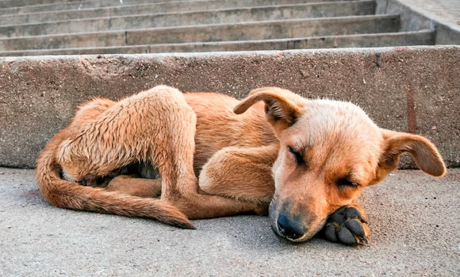

¿Cómo adoptar a un perro callejero?
Adoptar a un perro callejero tiene una infinidad de ventajas, pero también conlleva a ciertas responsabilidades. La primera de ellas es estar consciente de los pasos a seguir para concretar la adopción y los preparativos para la llegada al hogar de tu nuevo mejor amigo.
Desde Amor Incondicional te contamos cómo y dónde puedes adoptar a un perro sin hogar, así como los principales requisitos para asegurarte de que la adopción se haga correctamente.
¿Qué debo saber antes de adoptar a un perro callejero?
Antes de nada, debes preguntarte si estás listo para dar este gran paso en tu vida. Si bien la idea de adoptar a un perro callejero suena noble ¡y efectivamente lo es!, en la realidad ello supone asumir el compromiso de brindarle todos los cuidados fundamentales para su salud y bienestar.
Darle a tu nuevo mejor amigo una alimentación de calidad, atención veterinaria, una buena educación y socialización, vacunas y tratamientos preventivos y un ambiente cómodo (entre otros). Requiere no solo de la voluntad de adoptar a un perro, sino también tiempo, dedicación, paciencia y una suficiente solvencia económica.
¿Dónde adoptar un perro sin hogar?
Si te sientes listo para dar el próximo paso, entonces, será momento de decidir dónde adoptar a un perro callejero. La alternativa más recomendable y segura es recurrir a una protectora o refujio de animales.
Gran parte del trabajo de estas instituciones es garantizar que los perros en adopción estén preparados para recibir un nuevo hogar y familia. Además, allí encontrarás profesionales y voluntarios que con gusto te acompañarán durante el proceso de adopción, ya sea aclarando tus dudas o ayudándote en la adaptación del perro adoptado a su nuevo hogar.
Otra ventaja de adoptar a un perro callejero en una protectora o refugio, es que puedes realizar visitas antes de concretar la adopción. Así, tendrás la oportunidad de conocer los animales que puedes adoptar, su carácter, sus necesidades y cuidados específicos, su historia, etc.
Todo eso te ayudará a elegir un compañero más compatible con tu estilo de vida, el espacio que tienes disponible en tu hogar, el tiempo que puedes dedicar a su crianza, y tu propia personalidad.
Aquí hay una lista de refugios de adopción de mascotas en todo el país. Haga clic en un refugio para ver las mascotas disponibles para adopción.